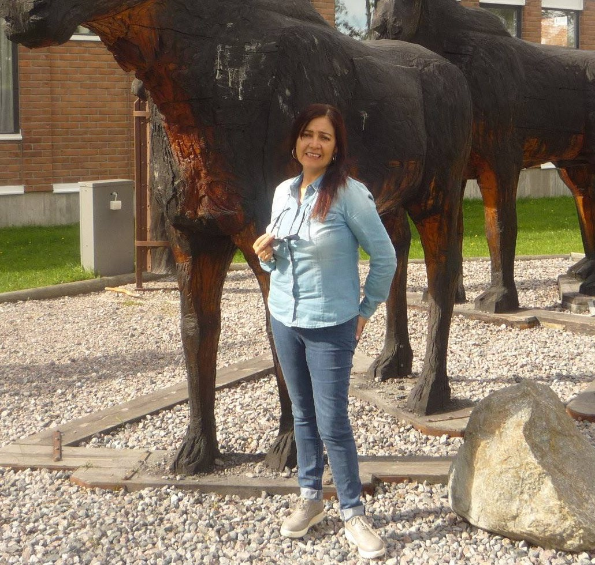
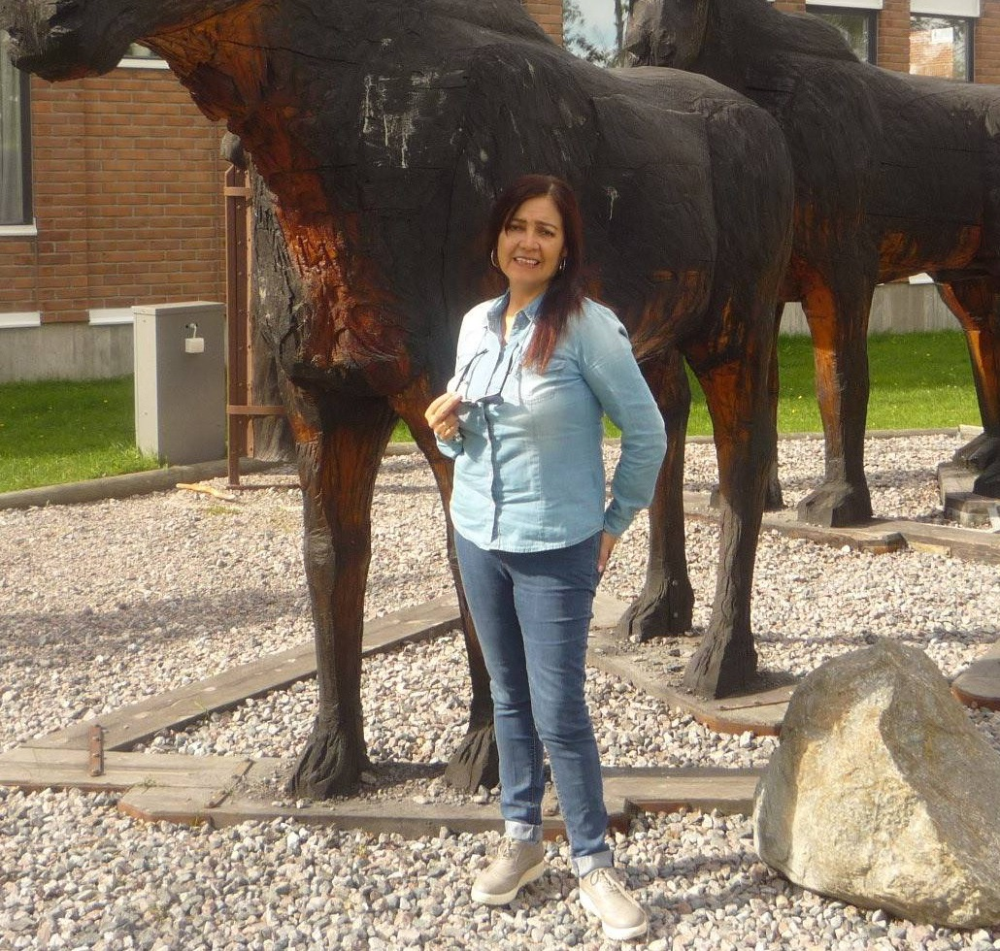

Varmt välkommen till Carleudd!
Birger och Marie Carleudd har ungefär ett hundra bi-samhällen runt om Virserum och de jobbar hela sommaren så att bina kan producera den goda honungen som vi sedan kan njuta av. Inga bekämpningsmedel eller andra otäckheter används, utan helt nartuligt samlar bina ihop honungen i vaxkakorna som sedan samlas in och slungas, för att senare silas och tappas upp.
 
